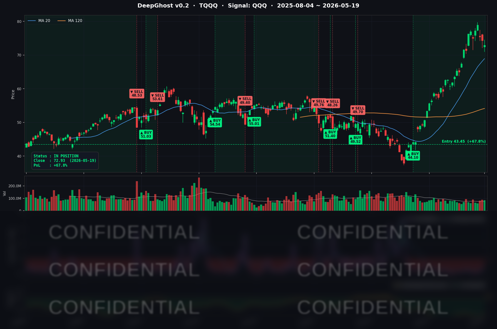

금리가 이슈입니다. 시장은 저유가 정책 또는 트럼프의 타코를 기대하고 있습니다.
그럼에도 불구하고, 메모리 반도체는 반등에 성공 했습니다. 투자심리는 아직 죽지 않았다는 것을 보여줍니다.
주식은 "예측"이 아닌 "대응"입니다. 본인의 매매 Rule이 없다면 Ghost.AI 지침을 따르세요.
📊 오늘의 매매 신호
| 항목 | 내용 |
|---|---|
| 오늘 할 일 | ✅ 아무것도 안 해도 됩니다 |
| 포지션 상태 | 📈 TQQQ 보유 중 (IN POSITION) |
| 매수 진입일 | 2026-04-07 (42일째) |
| 진입가 → 현재가 | $43.45 → $72.93 |
| 현재 포지션 수익 | +67.85% |
TQQQ 시그널 — IN POSITION
현재 상태: 매수 포지션 유지 중 | 누적 수익률 +67.85%

시그널이 말하는 것
오늘 나스닥은 -0.84%, S&P500은 -0.67% 하락했습니다. 30년물 국채금리가 19년내 최고를 찍으면서 모든 위험자산이 동시에 디레이팅 압박을 받은 날이었습니다. 하지만 Ghost.AI가 TQQQ에 대해 보는 신호는 여전히 깊은 매수 구간에 머물러 있습니다.
매수 확신은 어제보다 아주 약간 약해졌습니다. 신호 강도가 하루 사이 조금 후퇴했지만, 청산 임계까지는 아직 여유가 있습니다. 시장이 횡보·혼조 구간이 아니라 방향성을 유지하고 있다는 게 모델의 평가입니다.
오늘 미국 마감 — 주요 이슈 서머리
지수 마감
| 지수 | 종가 | 등락률 |
|---|---|---|
| S&P 500 | 7,353.61 | -0.67% |
| 나스닥 종합 | 25,870.71 | -0.84% |
| 다우존스 | 49,363.88 | -0.65% |
3대 지수 동반 하락. S&P500은 3거래일 연속 약세, 빅테크 비중이 가장 큰 나스닥이 -0.84%로 가장 크게 빠졌습니다. 5/20 마감 후 엔비디아 어닝을 앞두고 방어적 포지셔닝까지 더해지면서 위험자산 전반에서 자금이 유출됐습니다.
국채 금리 & 연준
| 국채 만기 | 수익률 | 전일 대비 |
|---|---|---|
| 2년물 | 약 4.14% | +8bp |
| 10년물 | 4.67% | +4bp |
| 30년물 | 약 5.17% (장중 5.197% 터치) | +12bp |
오늘의 핵심은 30년물의 폭주입니다. 장중 5.197%까지 치솟으며 글로벌 금융위기 직전인 2007년 7월 이후 19년내 최고치를 기록했습니다. 단기물보다 장기물이 훨씬 크게 오르는 "울트라 베어 스티프닝" 형태인데, 단순한 인플레이션 우려를 넘어 정책 신뢰도(credibility) + 재정 적자 듀레이션 프리미엄이 가격에 누적되고 있다는 의미입니다.
연준 위원 발언은 당일 메이저 정책 연설은 없었지만, 시장은 5/21 공개 예정인 4/29 FOMC 의사록의 매파 톤을 미리 가격에 반영하는 듯합니다. 4월 회의에서 Miran은 인하를 주장했고 Hammack·Kashkari·Logan은 동결과 easing bias 제거를 지지하며 dissent가 4명이나 나왔습니다. 연내 인하 확률은 사실상 0에 수렴했고, 일부 트레이더는 연내 추가 25bp 인상 가능성까지 베팅(약 40%)하고 있습니다.
장기금리가 5%+에 정착하면 듀레이션이 긴 자산(소프트웨어·플랫폼·롱듀레이션 그로스)의 멀티플이 가장 크게 압박을 받습니다. 오늘 빅테크 약세의 근본 원인이 바로 이것입니다.
핵심 이슈
-
30년물 19년내 고점 → "Bond Vigilantes" 복귀: 30년물 5.197%는 단순한 듀레이션 매매가 아니라 정책 신뢰도 이슈로 재해석되고 있습니다. 신임 Fed 의장 Warsh 체제 하의 우선순위 재조정 불확실성, 4월 CPI +3.8% YoY(2023년 5월래 최고), PPI 상방 서프라이즈, 에너지發 인플레이션이 만성 장기금리 프리미엄으로 누적된 결과입니다. 30년-10년 구간이 폭발적으로 벌어지는 모습은 "장기물발 risk-off" 시그널.
-
NVDA Q1 FY27 어닝 D-1 (5/20 마감 후) → 옵션 IV 최대 부풀림: NVDA 종가 $221.56, 시총 약 $5.43조. 컨센서스는 매출 $78.8~79.2B(+78~79% YoY), 비-GAAP EPS $1.77~1.78, 데이터센터 매출 ~$73B, 총마진 ~74.5% 수준. 시장의 진짜 관심은 Q2 FY27 가이던스 — 컨센 $85~87B vs. 휘스퍼 $90B. 과거 6분기 연속 매출을 3~4% 상회했음에도 최근 5분기 중 4번이 어닝 다음날 하락한 통계가 부담입니다. 이번 어닝 한 건이 다음 1주일 시장 전체 방향성을 결정합니다.
-
Trump 이란 공격 보류 보도 → 유가 단기 안정, 그러나 지정학 프리미엄 잔존: Brent 7월물 -1%대 $110.69, WTI -0.41% $108.21. Qatar·Saudi·UAE 정상의 요청으로 "내일 예정된 이란 공격을 보류했다"는 트럼프 발언이 단기 안정 요인. 다만 호르무즈 해협은 여전히 사실상 봉쇄, 누적 상승률(2/28 전쟁 개시 후 +50%+)은 그대로 유지. 유가가 다시 급등할 경우 30년물 5.5%+ 시나리오도 배제할 수 없습니다.
매크로 체크
| 지표 | 수치 | 해석 |
|---|---|---|
| WTI 유가 | 약 $108 | 트럼프 보류 보도에 -0.41%, 절대 레벨은 여전히 매우 높음 |
| Brent 유가 | 약 $110.69 | 7월물 -1%대 후퇴 |
| DXY (달러지수) | 99~100 | 1개월래 고점 유지 — 안전자산 선호 |
| VIX | 약 19~20 | 전일 17~18 대비 상승, 어닝 + 금리 쇼크 IV 확장 |
| 공포탐욕 지수 | 61 (탐욕) | 5월 초 69 → 5/18 63 → 5/19 61로 점진 후퇴, 모멘텀 명백히 중립으로 수렴 |
당일 주요 경제지표 발표는 없었습니다. 이번 주 후반에 S&P Global PMI 플래시(제조/서비스), 신규 주택착공 발표가 예정돼 있고, 5/22에는 PCE 사전 가늠 지표가 나옵니다.
커버리지 종목 동향
| 종목 | 종가 | 등락 | 당일 주요 뉴스 |
|---|---|---|---|
| NVDA | $220.61 | -0.77% | 5/20 어닝 D-1, 5거래일 누적 -5.7% 조정, 옵션 IV 최대 |
| AAPL | $298.97 | +0.38% | $300 핵심 피봇 방어, 빅테크 중 유일 양수 마감(NFLX 제외) |
| MSFT | $417.42 | -1.44% | 장중 변동성 1.5%+, $425 저항 재이탈 후 $415 지지선 테스트 |
| GOOGL | $387.66 | -2.34% | 장중 $393~$408 변동성 3.8%, $400 저항 두 번 실패 + 분배 거래 |
| AMZN | $259.34 | -2.08% | 일중 $255~$263, 리테일 모기지·유가 부담 + AWS 줄다리기 |
| META | $602.61 | -1.41% | 별도 헤드라인 없음, 빅테크 약세 동조 |
| AVGO | $411.07 | -2.29% | UBS TP $490(Buy) 모멘텀 유지, 단기 risk-off에 동조 차익실현 |
| INTC | $110.80 | +2.43% | 장중 변동성 9%+, Citi TP $130(Buy) + 자체 파운드리 회복 시나리오 |
| QCOM | $195.61 | -3.94% | 금일 빅테크 중 최대 낙폭, Apple 자체 모뎀(2027) 매출 공백 리스크 + SOX 약세 주범 |
| TSLA | $404.11 | -1.43% | 30년물 쇼크 + 소비재 회의론 동조 |
| NFLX | $89.33 | -0.36% | 가격 인상 + 광고 BM + 비-AI 익스포저로 상대적 방어 |
시장과 시그널 — 오늘의 인사이트
오늘은 시그널의 3-Layer 대응이 동시에 작동한 날입니다.
Layer 1 — 능동적 차익실현: AMZN과 GOOGL을 청산했습니다. 두 종목 모두 어제까지 각각 +25%, +31%의 누적 수익을 들고 있던 추세 코어였습니다. 그런데 오늘 모델 신호가 매수 영역에서 청산 영역으로 큰 폭 양전환했고, 종가도 각각 -2.08%, -2.34% 빠졌습니다. 30년물 5.197%는 듀레이션이 긴 그로스(소프트웨어·플랫폼)에 가장 큰 멀티플 압박을 가하는 환경이고, 두 종목은 그 압박을 가장 먼저 받는 위치에 있습니다. 게다가 GOOGL은 장중 변동성 폭이 3.8%였고 거래량이 평균 대비 +5.5%로 늘었습니다. 분배(distribution) 거래의 전형적 시그널입니다. 모델이 매크로 톤과 정합하게 능동적 차익실현을 실행한 것입니다.
Layer 2 — 코어 보유 유지: 그럼에도 인덱스(QQQ→TQQQ)와 AAPL·NVDA는 그대로 잡고 있습니다. 매수 신호 강도가 약간 후퇴하긴 했지만 여전히 깊은 매수 영역이고, 청산 임계까지 여유가 매우 큽니다. 보유 종목 평균 PnL이 약 +11.95%로 쿠션이 두꺼운 점도 보유 지속을 지지합니다. 특히 AAPL은 빅테크 중 유일하게 양수 마감(+0.38%)하며 $300 피봇을 방어했고, 매수 신호도 가장 깊은 영역에 있습니다. 빅테크 내부에서 30년물 쇼크 회복력이 가장 큰 종목이 어떤건지 말해주는 듯 합니다.
Layer 3 — 어닝 베팅 강화: 가장 흥미로운 건 NVDA입니다. 어제까지 매수 신호 강도가 중립권으로 후퇴했었는데, 오늘 다시 깊은 매수 영역으로 재가속했습니다. 5/20 어닝을 하루 앞두고 모델이 "조정 마지막 구간을 매수 기회로 재평가"한 셈입니다. 단, risk/reward는 비대칭입니다. 옵션 IV가 이미 비싸진 상태이고, 가이던스가 휘스퍼($90B)에 못 미치면 반도체 섹터 전반에 충격이 갈 수 있습니다. 보유 PnL +0.94%로 쿠션도 얇습니다. 어닝 미스 시 즉각 청산 시그널이 떨어질 수 있는 구도입니다.
여기에 모델이 사지 않은 것의 가치도 보여줬습니다. QCOM은 오늘 -3.94%(시황 헤드라인은 -5.3% 보도)로 SOX 약세의 주범이었습니다. 모델은 QCOM을 줄곧 CASH 상태로 비워뒀고, Apple 자체 모뎀 발효 시 연간 $4~5B 매출 공백 리스크가 재부각되는 오늘 같은 날 그 회피가 손실 회피로 직결됐습니다. "무엇을 사지 않았는지"도 시그널의 가치입니다.
금리 흐름이 TQQQ에 주는 시사점은 분명합니다. 30년물 5%+가 일시적 노이즈가 아니라 재정 듀레이션 프리미엄으로 영구 정착한다면, 빅테크 멀티플의 영구적 디레이팅을 의미합니다. 그러나 오늘 시점에서 모델은 인덱스 매수 구조가 손상되지 않았다고 판단했습니다. 5/21 FOMC 의사록이 매파 강성으로 확인되거나 NVDA 어닝이 휘스퍼를 크게 하회한다면 시그널 강도가 한 단계 추가로 빠질 수 있습니다. 5/21~5/22가 분기점입니다.
내일을 위한 체크리스트
- [ ] NVDA Q1 FY27 어닝 (5/20 마감 후, 한국시간 5/21 새벽): 가이던스 $85~87B 컨센 vs. 휘스퍼 $90B 갭, 데이터센터 매출, 총마진 75% 사수 여부, China 익스포저 코멘트, Blackwell·GB300 출하 페이스 — 이 한 건이 다음 주 시장 전체 방향성 결정
- [ ] 5/21 FOMC 4/29 회의 의사록 공개: dissent 4명(Miran·Hammack·Kashkari·Logan)의 의견 분포, easing bias 제거 논의 톤, 신임 의장 Warsh 톤 — 매파 강성도 확인
- [ ] 30년물 5.2%+ 정착 여부: 추가 상승 시 빅테크 추가 디레이팅 트리거. 5.5%+ 시나리오 발생 시 모델의 매수 영역 정의 재보정 가능성
- [ ] AMZN/GOOGL 다음 며칠 신호 흐름: 청산 다음날 신호가 (a) 중립권 유지 시 = 단발성 차익실현, (b) 깊은 청산권 진행 시 = 추세 전환 시작 — 빅테크 분배 사이클 신호인지 판단
- [ ] VIX·공포탐욕 추이: VIX 19~20대에서 추가 상승 시 risk-off 본격화. 공포탐욕 61이 50 아래로 빠질 경우 시장 톤 본격 전환
Ghost.AI — Quantitative AI Investment
Model: DeepGhost v0.2 | Transformer-Based Deep Learning
Coverage: 13 tickers | Updated every trading day after US market close
⚠️ 본 자료는 정보 제공 목적으로만 작성되었으며 투자 권유가 아닙니다. 모든 투자의 책임은 투자자 본인에게 있습니다. 과거 성과가 미래 수익을 보장하지 않습니다.